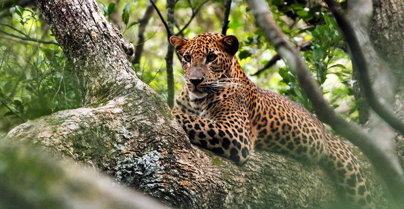
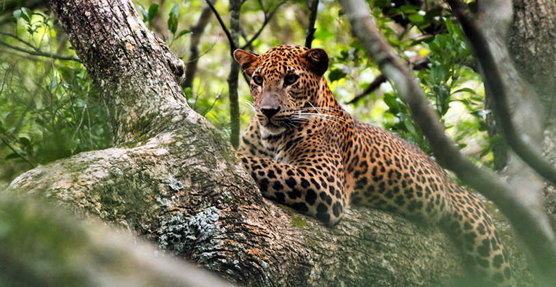

About
The leopard (Panthera pardus) is the smallest of the Panthera genus' four major predatory cat species.
Despite their diminutive size, they are entirely capable of capturing large prey due to their huge skulls, which enable strong jaw muscles. Leopards can be found in both rainforests and deserts in Sub-Saharan Africa, the southern half of Asia, and the Russian and Manchurian Far East.
The Persian leopard subspecies produces the largest individuals (subspecies saxicolor). The largest leopard ever recorded, weighing 96.5 kg, was a Persian leopard. Males are 30 percent heavier than females on average.
Female Arabian leopards are the tiniest adults, weighing as little as 17 kg. Within a mammal genus, there is such a wide range of sizes.
The leopard of Sri Lanka is a relatively large subspecies. As tigers and lions are not present on the island, this is most likely due to the lack of competing big cats that are more dominant.
The male Sri Lanka leopard can grow to be 110 to 150 cm long and weigh between 55 and 70 kg. Females are slightly smaller than males, weighing about 32 kg.
Habitat
.webp)
.webp)
.webp)
They can also be found in tropical lowland rain forests and montane rain forests in the central highlands (Horton plains) (Sinharaja). This means leopards can be found in all three of the island's main climate and vegetation zones:
Sri Lanka leopards can be found in large numbers in the dry region, which is home to nearly all of the country's wildlife parks. This is a tropical mixed dry-zone forest region.
In the north and east, there are semi-arid scrub jungles (Wilpattu and Yala). The fact that dry zone areas are less heavily populated by humans and thus provide a higher density of prey may be the explanation for the higher number of leopards. The hillcountry, which has the second highest leopard population in Sri Lanka, is where most of these big cats live outside of national parks, as there is only one which is Hortan Plains.
The number of leopards in Horton Plains National Park has increased as a result of the growing population of Sambar deer in the region, while leopards are rarely seen by visitors because they live concealed in the dense forests of Horton Plains.
The leopard populations in Sri Lanka's two largest national parks, Wilpattu and Yala, are well-known. Yala Block 1 has a population density of 0.179 people per square kilometer. Wilpattu and Yala are thought to have the highest leopard population density in the world.
Hunting Skills
.webp) 

.webp)
Since the leopard is so powerful and at ease in trees, it often drags its prey up into the branches. It hopes to keep large animal bodies protected from scavengers by dragging their bodies aloft.
Leopards may also hunt from trees, using their spotted coats to blend in with the leaves before they spring with a deadly pounce. These nocturnal predators ambush their prey by making stealthy movements in the dark.
Leopards' diet is far more adaptable and opportunistic than that of other cats. Only in the highland wilderness of Horton Plains National Park and its environs are juvenile or ill individuals the main prey.
Leopards in Sri Lanka also prey on young buffalos and wild boars. They have also been known to attack adult buffalos on occasion.
Leopards prefer high prey vulnerability to high prey density because they need dense vegetation such as wood or tall grass for adequate concealment.